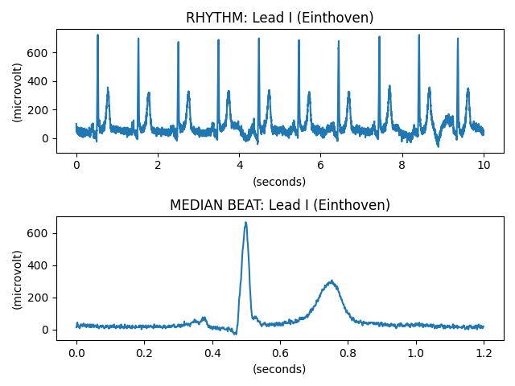

Note
Click here to download the full example code
Decode and plot Waveform Data¶
This example illustrates how to plot waveforms from a Waveform Sequence using matplotlib.
import numpy as np
import matplotlib.pyplot as plt
from pydicom import dcmread
from pydicom.data import get_testdata_file
from pydicom.waveforms import generate_multiplex
fpath = get_testdata_file("waveform_ecg.dcm")
ds = dcmread(fpath)
# Plot the first channel of each multiplex
ch_idx = 0
# We could also use ds.waveform_array()
fig, axes = plt.subplots(len(ds.WaveformSequence))
generator = generate_multiplex(ds, as_raw=False)
for ax, mplx, arr in zip(axes, ds.WaveformSequence, generator):
nr_channels = mplx.NumberOfWaveformChannels
nr_samples = mplx.NumberOfWaveformSamples
sampling_fq = mplx.SamplingFrequency # in Hz
mplx_label = mplx.MultiplexGroupLabel
ch_item = mplx.ChannelDefinitionSequence[ch_idx]
x = np.arange(0, nr_samples / sampling_fq, 1 / sampling_fq)
x_units = "seconds"
# ChannelSensitivityUnitsSequence is type 1C, so check it's there
if "ChannelSensitivityUnitsSequence" in ch_item:
y_units = ch_item.ChannelSensitivityUnitsSequence[0].CodeMeaning
else:
y_units = "unitless"
# Description of the channel source
ch_source = ch_item.ChannelSourceSequence[0].CodeMeaning
ax.plot(x, arr[..., ch_idx])
ax.set_title(f"{mplx_label}: {ch_source}")
ax.set_xlabel(f"({x_units})")
ax.set_ylabel(f"({y_units})")
fig.tight_layout(pad=1)
plt.show()
Total running time of the script: ( 0 minutes 0.249 seconds)